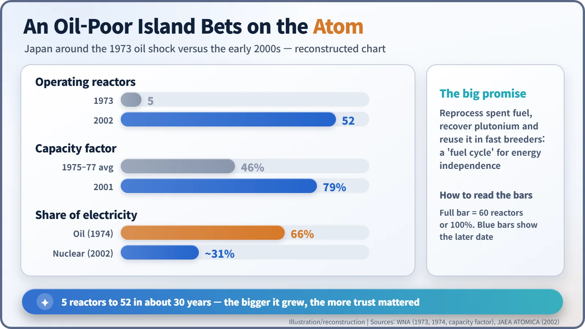
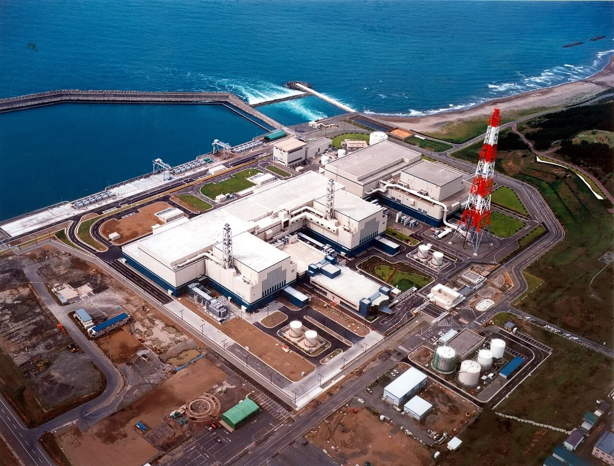
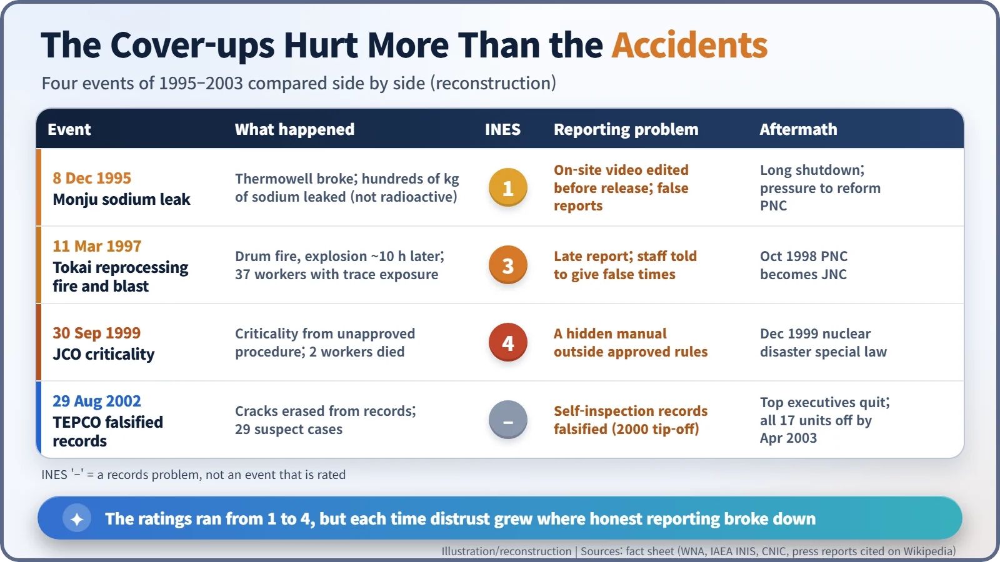

Nuclear History · 268
One Edited Videotape — Japan's Nuclear Expansion and Its Crisis of Trust (1995–2002)
An edited video, a falsified timeline and erased cracks: four events in eight years showed that hiding problems can do more damage than the problems themselves.
After the 1973 oil shock Japan grew its nuclear fleet from five reactors to more than fifty. Between 1995 and 2002, four events shook public faith in that programme: the Monju sodium leak, the Tokai reprocessing fire, the JCO criticality accident and TEPCO's falsified inspection records. The accidents differed greatly in size, but distrust grew most where honest reporting failed.
A single videotape
What can a single videotape hold? In December 1995, at the Monju prototype fast breeder reactor in Tsuruga, Fukui Prefecture, someone filmed the scene just after an accident. The trouble was not what the tape showed. It was that the tape had been edited before the public saw it. For the next eight years, one question followed Japan's nuclear industry: can we believe what these people tell us?
An island without oil bets on the atom
The story begins with the 1973 oil shock. According to the World Nuclear Association (WNA), oil generated 66% of Japan's electricity in 1974, and when the shock hit the country had just five operating reactors. For an island with almost no fuel of its own, nuclear power became a survival strategy. [1]
Japan built quickly. Data from the Japan Atomic Energy Agency put the fleet at 52 reactors supplying about 31% of electricity in 2002. The plants also ran better: the average capacity factor rose from 46% in 1975–77 to 79% in 2001. On top of that sat a grand plan, the "nuclear fuel cycle": reprocess spent fuel, recover the plutonium and burn it again in fast breeder reactors. For a country that imports nearly all its fuel, it sounded like a promise of energy independence. [1]

But the bigger the programme grew, the more it needed something that cannot be built from concrete: public confidence that operators would tell the truth when something went wrong. From 1995 that confidence was tested again and again.
Crack one: the Monju tape
On the evening of 8 December 1995, a thermowell (a protective sleeve for a temperature sensor) snapped in Monju's secondary cooling loop. Several hundred kilograms of liquid sodium (an official estimate of about 640 kg) leaked out and burned. Sodium in the secondary loop is not radioactive, and the event was rated Level 1 on the International Nuclear Event Scale (INES). Monju's design and its long, troubled life are a story of their own; here we follow what happened next. [5]
It emerged that the operator, the Power Reactor and Nuclear Fuel Development Corporation (PNC, known in Japan as Donen), had released an edited version of video shot just after the leak and had filed reports that did not match the facts. In January 1996 Shigeo Nishimura, a PNC deputy general manager who had been handling the internal inquiry, was found dead at a Tokyo hotel. Officials said he had not been involved in the cover-up, but his death deepened public distrust. [5]
Crack two: the Tokai clock
On 11 March 1997 fire broke out in the bituminization facility at PNC's reprocessing plant in Tokai-mura, Ibaraki Prefecture. The facility mixed low-level radioactive liquid waste with asphalt and set it in drums. Around 10 a.m. staff believed they had put out a drum fire with water, but about ten hours later an explosion followed. PNC's own analysis concluded that too little water had been sprayed, so drums kept releasing flammable gas that built up inside. Thirty-seven nearby workers reportedly received trace radiation exposure, and the event is reported to have been rated INES Level 3. [2] [6]
Once again, what angered people most came afterwards. The report to the authorities was late, and managers had workers give false times for the evacuation. The Science and Technology Agency filed a criminal complaint against PNC and its managers, and in October 1998 PNC was reorganised as the Japan Nuclear Cycle Development Institute (JNC). [6]
Cracks three and four: a hidden manual and erased cracks
On 30 September 1999, also in Tokai-mura, a criticality accident at the JCO fuel-processing plant killed two workers (INES Level 4). Work instructions that strayed from the approved procedure were identified as a cause, and that December Japan enacted a special law on nuclear emergency preparedness.
Then, on 29 August 2002, the problem surfaced in paperwork rather than in a plant. Japan's Nuclear and Industrial Safety Agency (NISA) announced that Tokyo Electric Power Company (TEPCO) had falsified voluntary inspection records. At the Fukushima Daiichi, Fukushima Daini and Kashiwazaki-Kariwa plants, cracks in reactor internals (core shrouds) and piping had been left out of records and not reported to the regulator: 29 suspect cases in all. The trail began in July 2000 with a tip-off from a former engineer at a General Electric affiliate. [4] [3]

The fallout was heavy. The chairman, president, vice-president and two senior advisers stepped down by the end of September. TEPCO's 17 reactors were shut one after another for inspection, and by April 2003 all of them stood idle. Similar concealment came to light at other utilities too. [7] [4]
Different ratings, the same crack
Line the four events up and something stands out. They differed hugely in size: a leak of non-radioactive sodium (Level 1), trace worker exposure (Level 3), two deaths (Level 4), and a case that was not an accident at all but falsified records. Yet public distrust did not follow the ratings. The moments that provoked the greatest anger were the edited video, the falsified timeline and the erased cracks — the places where honest reporting broke down.

TEPCO later told an IAEA meeting that it had rewritten its code of conduct, set up an ethics committee with outside experts and an independent quality-assurance body. Its reactors returned to service one by one by 2005. [3] [7]
Nuclear safety is not only a matter of strong steel. Operators also need the habit of recording and reporting every reading and every tick on a checklist exactly as it is; only then will society believe their explanation when something goes wrong. That is the lesson one edited videotape left behind.